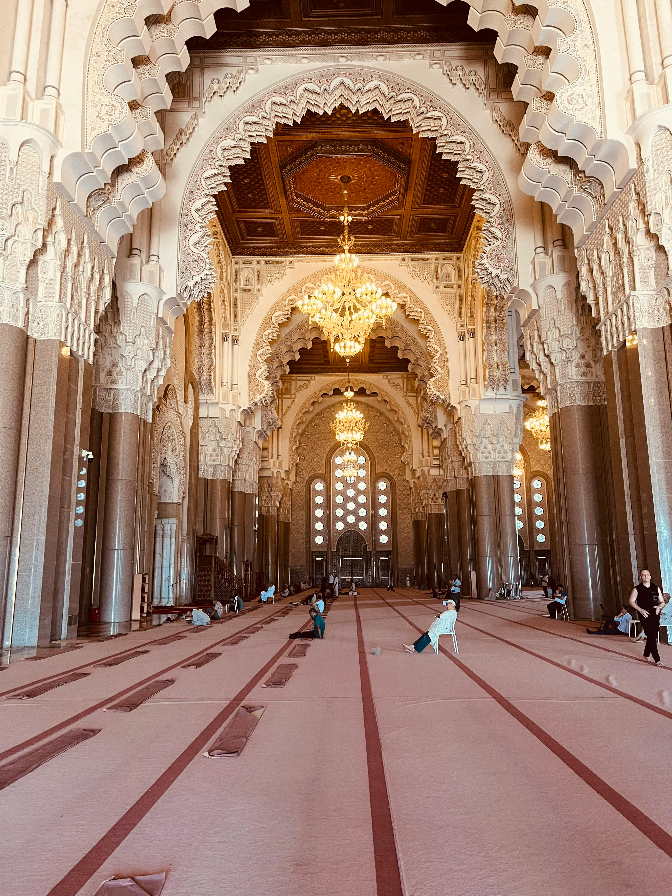
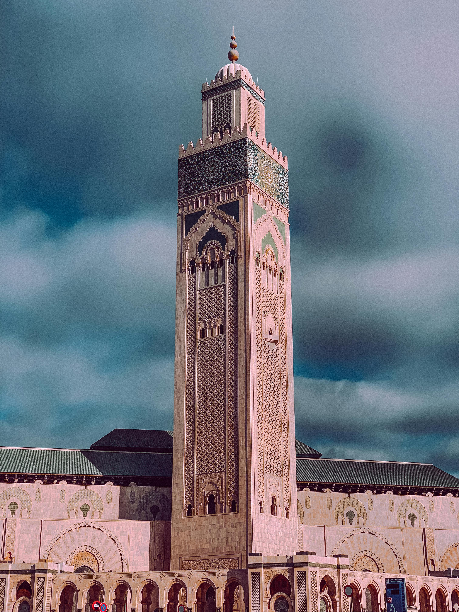

Pèlerinages & Zaouïas
Visitez les mausolées Fès.
- Accompagnement spirituel possible
- Transport privé et hébergement à proximité
- Cérémonies religieuses sur demande
Pèlerinages, visites de mosquées historiques et retraites spirituelles, accompagnés par des guides passionnés et experts.
Le Maroc est une terre de spiritualité profonde. Ses zaouïas, ses mosquées millénaires et ses traditions soufies en font une destination unique pour les voyageurs en quête de sens.
Souma Tourisme vous accompagne dans une démarche respectueuse, authentique et personnalisée, en collaboration avec des guides locaux passionnés et des établissements certifiés.
Découvrir nos offres
Découvrez le Maroc sacré à travers des circuits pensés pour le recueillement et la découverte.
Visitez les mausolées Fès.

Hassan II (Casablanca), Koutoubia (Marrakech), Mosquée des Andalous (Fès) — visites guidées selon les horaires.

Accompagnement complet pour votre Omra : visa, billets, hébergement à proximité des lieux saints et encadrement spirituel tout au long du séjour.
Un itinéraire spirituel reliant Fès, Meknès, Rabat et Casablanca.
Installation dans un riad, visite de la Zaouïa de Moulay Idriss II et de la médina.
Pèlerinage au mausolée de Moulay Idriss Ier, découverte de Volubilis.
Nécropole mérovingienne, mausolée de Mohammed V et mosquée historique.
Grande Mosquée Hassan II, médiathèque coranique et retour.
« Un accompagnement d'une grande délicatesse. Les visites des zaouïas étaient magiques — je n'oublierai jamais ce séjour. »
« La retraite à Fès m'a profondément ressourcée. L'organisation était parfaite et les guides exceptionnels. »
« Très professionnel, respectueux des pratiques religieuses. La mosquée Hassan II était un moment hors du temps. »
La plupart des mosquées marocaines sont réservées aux musulmans. Cependant, la Mosquée Hassan II de Casablanca est l'une des rares mosquées au monde ouverte aux visiteurs non-musulmans lors de visites guidées. Nous adaptons tous nos itinéraires en conséquence.
Oui, absolument. Tous nos partenaires hôteliers et restaurateurs proposent des repas 100% halal. Nous pouvons également adapter les menus selon vos besoins diététiques ou religieux spécifiques.
Tout à fait. Nos circuits sont entièrement modulables. Vous pouvez combiner une visite des zaouïas avec la découverte des médinas, des souks d'artisanat ou des paysages naturels du Maroc. Parlez-nous de vos envies et nous concevons l'itinéraire idéal.
Le printemps (mars–mai) et l'automne (septembre–novembre) offrent les meilleures conditions climatiques. Le mois de Ramadan est une période particulièrement intense et spirituelle, mais implique des adaptations dans les horaires de visites et de repas.
Remplissez le formulaire, notre équipe spécialisée vous répond sous 24h pour construire ensemble votre voyage idéal.